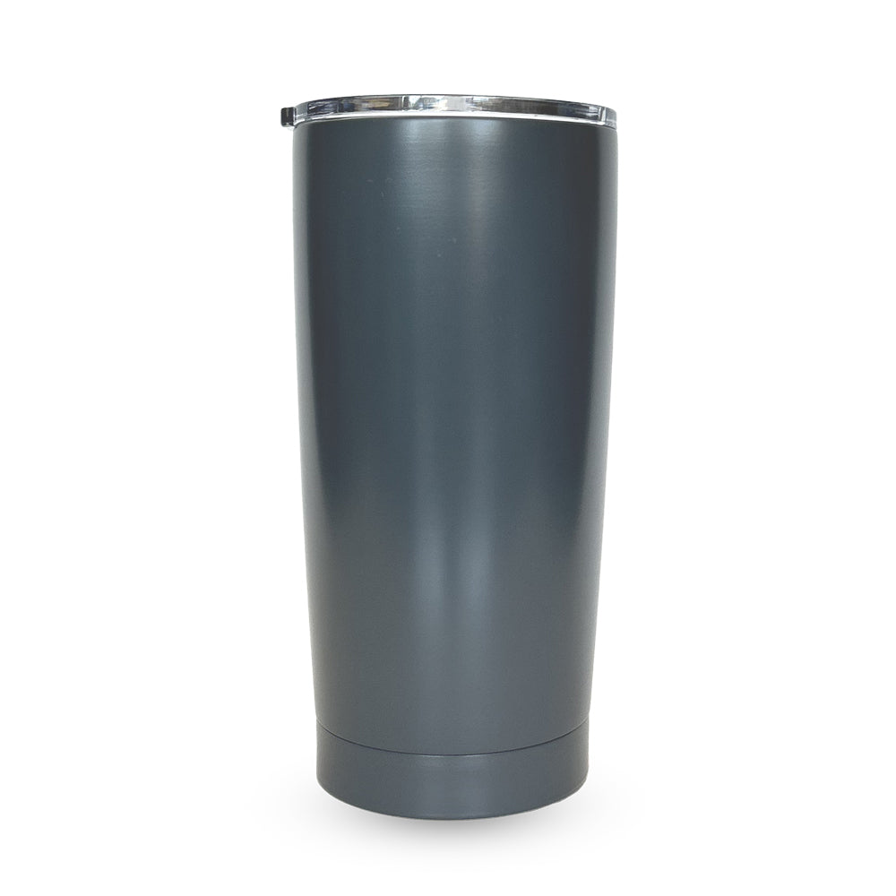
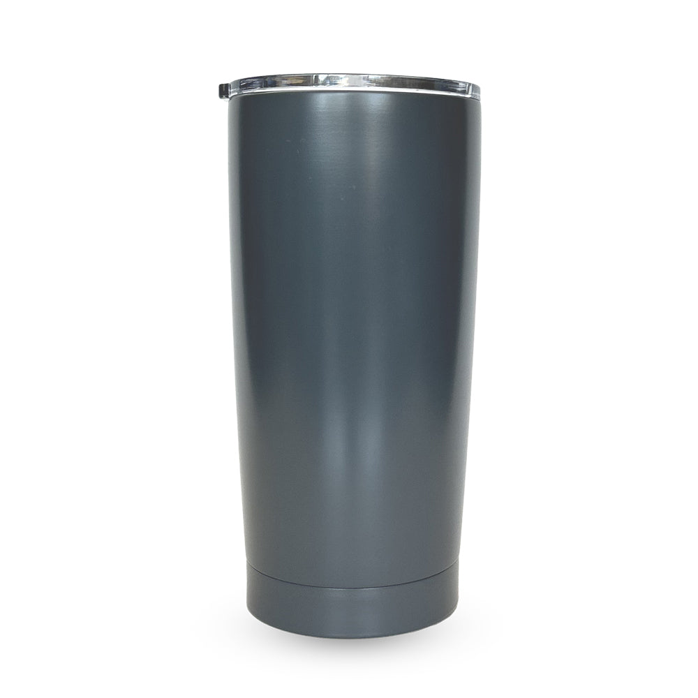

Les raisons pour lesquelles vous devriez opter pour nos gobelets isothermes
 

.jpg)


Saviez-vous pour reduire votre empreinte environnementale, il n'était pas forcement nécessaire de mener des actions de grande envergure, et que les petits gestes du quotidien avaient aussi leur importance ? Pensez par exemple aux bouteilles d'eau en plastique que vous achetez pour le sport ou aux gobelets en carton jetables que vous utilisez à la machine à café. Eh bien, ils pourraient tous être aisément remplacés par une solution pratique et réutilisable : le gobelet isotherme ntrcup en acier inoxydable! Elle est plus écologique, mais vous allez voir qu'elle a aussi bien d'autres atouts.
SOMMAIRE
- Les avantages écologiques de l'utilisation du gobelet isotherme
- Un contenant réutilisable sans plastique
- Un produit avec une longue durée de vie
- Une conservation optimale de la température pour éviter le gaspillage
Les avantages écologiques de l'utilisation de la gourde isotherme
Il y'a une multitude d'avantges à troquer les contenants conventionnels par des gobelets isothermes, et le premier d'entre eux est environnemental.
Un contenant réutilisable sans plastique
A chaque fois que vous achetez une bouteille en plastique, vous l'utilisez une fois, voire 2 OU 3, puis elle finit sa course à la poubelle. Et il vous faut alors racheter une nouvelle bouteille ou tout un pack. Le problème de ce mode de consommation, c'est que cela encourage la fabrication de plastique et génère une grande quantité de déchets qu'il faut traiter, ou qui finissent malheureusement dans la nature. Le gabelet isotherme en acier inoxidable , tout comme la gourde en verre, a l'avantage de ne pas utiliser de plastique(ou une infime partie pour le bouchon de joint) et de ne pas génerer de déchet. Dès que la boisson est terminéé,un petit nettoyage suffit à rendre le gobelet réutilisable, et cela, presque à l'infini!
Un produit avec une longue duréé de vie
Une bouteille ou un gobelet en acier inoxydable, en plus dêtre réutilisable, a l'avantage d'être résistante. Pas de risque qu'elle s'écrase au fond d'un sac, qu'elle se brise en tombant ou qu'elle s'altère après seulemnt quelques utilisations Et ça aussi, c'est écologique! Plus un produit dure longtemps, moindre est en effet son impact sur l'environnement.
Une conservation optimale de la température pour éviter le gaspillage
Vous est-il deja arrivé de jeter un fond de thé parcequ'il avait refroidi ? De ne pas finir une boisson froide parceque la bouteille est restée trop longtemps hors du frigo? Eh bien, vous pouvez éviter cela en avec l'utlisation d'une gourde isotherme. Un gobelet de qualité préserve durant plusieurs heures une boisson à la bonne température, reduisant considérablement le risque de gaspillage. En parlant de gaspillage, le fait d'opter pour un gobelet isotherme reduira aussi considérablement votre consommation d'eau minérable, puisée dans les sources et les nappes par les industriels. A la place, vous consommerez de l'eau du robinet, éventuellement filtrée pour en éliminer le chlore, le calcaire et d'autres petites impuretés.
Un gobelet pratique et polyvalent
Un gobelet réutilisable en verre ou en plastique sans BPA est deja plus écologique et pratique qu'une simple bouteille en plastique. Mais avec le gobelet isotherme inox, les utilisations sont encore plus diversifiées. Résistant, elle peut aisément être emportée en randonnée ou être laissée à un enfant. Isotherme, elle convient aussi bien à des boissons froides, tempérées que chaudes. Avec ses différents formats, il en existe qui tiennent dans un sac à main, d'autres qui s'adaptent au porte-gourde d'un vélo et d'autres encore avec une plus grande contenance pour vous accompagner toute la journée.
Une réduction des dépenses avec le gobelet isotherme
Le prix d'un gobelet isotherme est assez variable, selon la marque, la contenance et le design.Elle coûte généralement 2500 ET 5000 FCFA. Mais cela ne doit pas representer un frein, car à moyen terme, cela vous permet de faire des économies. D'abord, parceque vous consommerez surtout de l'eau du robinet, moins cher que l'eau vendue en bouteille. Ensuite parce que vous serez moins tenté de prendre des boissons à emporter. Avec le gobelet isotherme, il est en effet facile de préparer du thé ou du café à la maison et de l'emporter au bureau pour en profiter toute la matinéé, par exemple. Cela marche aussi avec le thé glacé, les jus de fruits, etc..., que vous avez peut-être l'habitude de prendre sur la route pour aller au travail, au distributeur de la cafétaria, etc. .
Les atouts santé à préferer le gobelet à la bouteille plastique
Parmi les derniers avantages de l'utilisation des gobelets isothermes, il y'a ceux qui concernent votre santé. Et comme vous comptez peut-être donner un gobelet à votre enfant et que c'est un contenant que l'on peut utiliser au quotidien, cela a son importance!
Toujours de quoi s'hydrater à portée de main
L'une des raisons pour lesquelles on ne s'hydrate pas assez est toute bête: on ne pense pas à boire. Si c'est votre cas, vous verrez qu'en optant pour un gobelet isotherme, vous allez boire plus souvent et ainsi mieux hydrater votre corps. Tout cela en pouvant choisir la boisson que vous souhaitez, froide ou chaude, nature ou aromatisée.
L'acier inox, bien plus sain que le plastique
L'acier inoxydable est un matériau très utilisé dans les cuisines professionnelles et dans le secteur de la santé. Et pour cause, il est résistant à la corrosion et il est sain. Boire dans une gourde isotherme est donc sans risque pour la santé, contrairement aux bouteilles en plastique. Ces dernières libèrent en effet des micro-particules dans la boisson qu'elle contient, et qui sont nocives pour la santé sur le long terme. Cela à condition de bien nettoyer votre gourde, surtout après qu'il a contenu une boisson sucrée ou boisson chaude de type thé, café,chocolat chaud. Equipez-vous d'un écouvillon, du même type que ceux conçus pour les biberons, afin de bien laver le fond et le contour de la bouteille. Pensez aussi à nettoyer le bouchon et le joint, simplement avec de l'eau chaude et un peu de liquide vaisselle.
Ce que nos clients disent :
« Ce gobelet est génial ! Mon café reste chaud toute la matinée. » – Marie L.

« Parfait pour mes randonnées. Plus besoin de transporter des bouteilles en plastique! » - Jean P >
«Design élégant et très pratique. Je l'utilise tous les jours au bureau. » Ange N